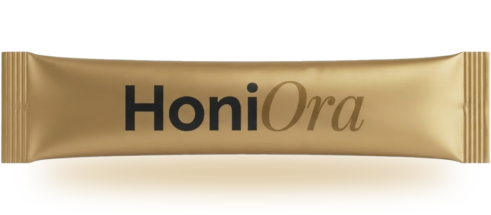

HONIORA · Morning Stack Guide
What replaces a morning stack of pills and powders?
Last updated 4 November 2026
One drink. HoniOra is a one-stick effervescent serving that replaces a separate creatine scoop, gut powder, nitric oxide capsules and focus capsules with 22 full-dose wellness actives plus magnesium and zinc, each named and dosed. Pour one stick pack into 500 ml of water. HoniOra is pre-launch, with a first drop in Q2 2027.
Join the founding list01 / Four jobs
What a morning stack needs to cover
Most pill and powder stacks do four jobs. HoniOra builds one serving around the same four.
Cellular energy: creatine monohydrate, ubiquinol, NMN, taurine and magnesium malate. Gut: Mānuka honey crystals on a prebiotic fibre base, Livaux gold kiwifruit, Feiolix feijoa and a spore probiotic. Vascular support: VasoDrive-AP peptides, Careflow mango and a plant nitric oxide matrix. Focus: L-theanine, citicoline, Braincurrant blackcurrant and Landkind salidroside.
02 / The full formula
Every active, with its dose per serving
One serving is one stick pack and weighs 20 g. Doses below are per serving.
| Active | Per serving | What it does |
|---|---|---|
| Cr.01 creatine monohydrate (Jenerise) | 5,000 mg | Cellular energy. Creatine is stored in muscle as phosphocreatine, which helps regenerate ATP during short, high-intensity effort. |
| MGO 850+ Mānuka honey crystals on Fiberest HF | 1,500 mg | Gut support. Methylglyoxal honey carried on a prebiotic fibre base (1,000 mg honey, 500 mg Fiberest). PMID 40293032 |
| Kaneka Ubiquinol | 100 mg | Cellular energy. The reduced form of coenzyme Q10, found in the mitochondrial membrane (supplied as 333 mg Kaneka Q30). |
| NMN (nicotinamide mononucleotide) | 400 mg | Cellular energy. A direct precursor of NAD+, the coenzyme cells use to make energy. NAD+ falls with age. |
| Livaux Gold Kiwifruit | 1,000 mg | Gut support. A fibre matrix carrying 41 phenolics that ferments slowly along the colon and feeds Faecalibacterium prausnitzii. PMID 33485721 |
| Actazin green kiwifruit (Anagenix) | 600 mg | Gut support. Freeze-dried whole green kiwifruit powder from New Zealand. |
| Pomma+ pomegranate extract | 300 mg | Polyphenol support. Pomegranate ellagitannins. How much converts to urolithin A varies by person and no trial has measured it for this formula. |
| Oxxynea polyphenol blend (Biotexia) | 450 mg | Antioxidant support. Olive leaf, grape, pomegranate, green tea, grapefruit, bilberry and orange extracts. 450 mg matches the polyphenols in about five servings of fruit and vegetables. Romain 2022, Nutrients |
| Feiolix feijoa | 1,000 mg | Metabolic support. Studied for effects on your own GLP-1 through abscisic acid and the gut bacteria. PMID 22075645 |
| Eriomin lemon flavonoid extract | 200 mg | Metabolic support. A standardised eriocitrin extract. Trials used 200 mg a day and measured GLP-1 and glycemic markers. PMID 35796695, PMID 37242433 |
| LactoSpore Bacillus coagulans MTCC 5856 | 6 billion CFU | Gut support. A spore-forming probiotic designed to come through the drink's own fizz. |
| Vitamin A (retinyl palmitate, cold-water soluble) | 900 mcg RAE | Barrier and immune support. 12 mg of powder per serving, 3,000 IU. |
| cGP-Pro blackcurrant | 100 mg | Micro-vascular support. Cyclic glycine-proline, studied for its link to IGF-1 availability. PMID 29865234 |
| Braincurrant whole NZ blackcurrant powder | 300 mg | Focus and mood. A freeze-dried whole-fruit powder from New Zealand blackcurrants. PMID 24742818 |
| AlphaWave L-theanine | 450 mg | Calm focus. A 28-day trial of AlphaWave found lower perceived stress and better sleep quality. PMID 38758503 |
| Taurine | 1,020 mg | Cellular energy. A conditionally essential amino acid and organic osmolyte that supports cellular fluid balance, calcium handling in muscle and mitochondrial function. |
| Landkind pure salidroside | 60 mg | Stress response. Precision-fermented salidroside, standardised to 98% or more. |
| Citicoline | 255 mg | Brain support. Delivers choline plus cytidine, which converts largely to uridine. Together they build phosphatidylcholine for brain cell membranes via the Kennedy pathway, where plain choline supplies only the building block. |
| VasoDrive-AP tripeptides (contains milk) | 508 mg | Vascular support. Casein lactotripeptides VPP and IPP, which inhibit angiotensin-converting enzyme. PMID 23566677 |
| Careflow mango fruit powder | 100 mg | Micro-vascular support. Organic Totapuri mango fruit powder. In lab tests it switched on eNOS and SIRT1. A single 100 mg dose raised skin blood flow 54% within hours, and 100 mg a day for 4 weeks raised microvascular blood flow against baseline in 75 healthy adults. 100 mg is the daily dose Biotexia sets for the Careflow grade. |
| vitAlign plant-based nitric oxide matrix | 60 mg | Nitric oxide. A blend of seven plant extracts that acts on the cell's own redox signalling. PMID 38612462 |
| Hytolive Bev olive extract | 300 mg | Antioxidant support. Standardised to 2% hydroxytyrosol, so 6 mg per serving. PMID 40690822 |
| Magnesium malate | 1,050 mg | Mineral support. About 200 mg elemental magnesium. |
| Zinc bisglycinate (TRAACS) | 105 mg | Immune and enzyme support. About 21 mg elemental zinc. |
The stick pack also carries an effervescent system: citric acid, malic acid, sodium bicarbonate and potassium bicarbonate, with thaumatin, glycyrrhizin and a kiwi, yuzu and passionfruit flavour.
03 / Questions
Questions
What is a great morning stack to replace my current pill and powder stack?
A good replacement covers the same jobs as your separate products, in doses you can check. For most people that means cellular energy (creatine), gut support (prebiotic fibre and a probiotic), vascular support (peptides and plant extracts) and focus (theanine and citicoline). HoniOra is built around those four systems. It puts 22 full-dose wellness actives, plus magnesium and zinc, into one effervescent serving, so a creatine scoop, a gut powder, a nitric oxide capsule and a focus capsule become one drink. HoniOra has not launched yet. The first drop is Q2 2027 and the founding list is free to join.
What is in HoniOra?
One stick pack makes one 20 g serving. The lead active is 5,000 mg of Cr.01 creatine monohydrate. The rest of the list is on this page with each dose. The stick pack also carries an effervescent system of citric acid, malic acid, sodium bicarbonate and potassium bicarbonate, plus thaumatin, glycyrrhizin and a kiwi, yuzu and passionfruit flavour.
How do I take it?
Pour one stick pack into 500 ml of water. The stick pack is designed to be ready in about 60 seconds. That timing is a design target and has not yet been tested on the finished stick pack.
When can I buy it?
Not yet. The first drop is Q2 2027. Nothing is charged today. Joining the founding list is free and gives first access plus founding-member pricing for life.
Has HoniOra been tested in a clinical trial?
No. The research cited on this site comes from published trials of the individual branded ingredients at the doses listed, from mechanism-level lab and animal research, or from the batch record. None comes from a trial of the finished HoniOra product. Individual response varies.
Does HoniOra contain allergens?
Yes. It contains a milk derivative (VasoDrive-AP casein lactotripeptides).
How much sodium and potassium does one serving carry?
About 249 mg of elemental sodium and about 424 mg of elemental potassium per serving, calculated from the formula and not yet measured.
Who should check with a doctor first?
Anyone who takes blood pressure medicine (including ACE inhibitors), nitrate medicine or erectile dysfunction medicine, anyone with kidney disease, anyone who is pregnant or breastfeeding, and anyone with a medical condition. HoniOra contains vascular active ingredients, vitamin A as retinyl palmitate (900 mcg RAE per serving), sodium, potassium, magnesium and zinc.
Where is HoniOra made?
HoniOra is a HoniCo New Zealand product. The ingredients are built on New Zealand bioactives and the stick packs are made in the USA.